Explore the Magic of Zermatt, Switzerland – A Mountain Paradise
Embark on a journey to Zermatt, where the allure of the Alps meets timeless Swiss traditions, creating an enchanting world waiting to be explored.
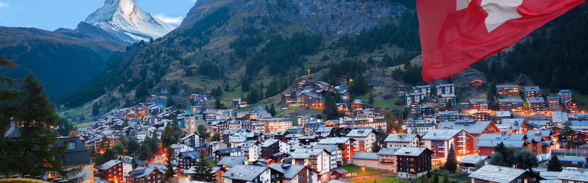Discover Zermatt: The Jewel of the Swiss Alps
Nestled in the heart of the Swiss Alps, Zermatt stands as a captivating blend of natural beauty and cultural richness. This charming mountain village, overshadowed by the iconic Matterhorn peak, offers a mesmerizing escape for adventurers and peace-seekers alike. Zermatt is a car-free zone, preserving its pristine Alpine air and tranquil ambiance. Visitors are greeted by traditional chalets and winding streets, creating a picture-perfect setting. Whether you're an avid skier, a nature enthusiast, or simply in search of relaxation, Zermatt's year-round offerings from world-class skiing and hiking trails to exquisite local cuisine, make it an unforgettable destination. The fusion of breathtaking landscapes, vibrant cultural experiences, and a commitment to environmental conservation ensures that Zermatt is not just a place to visit, but an experience to cherish.
 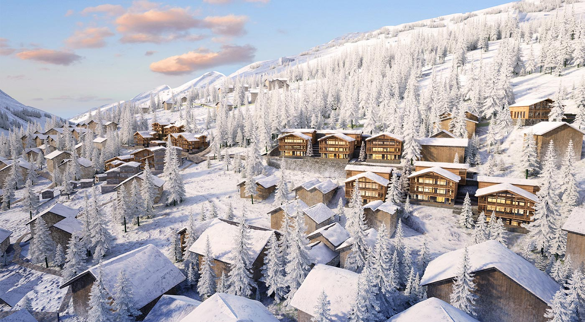
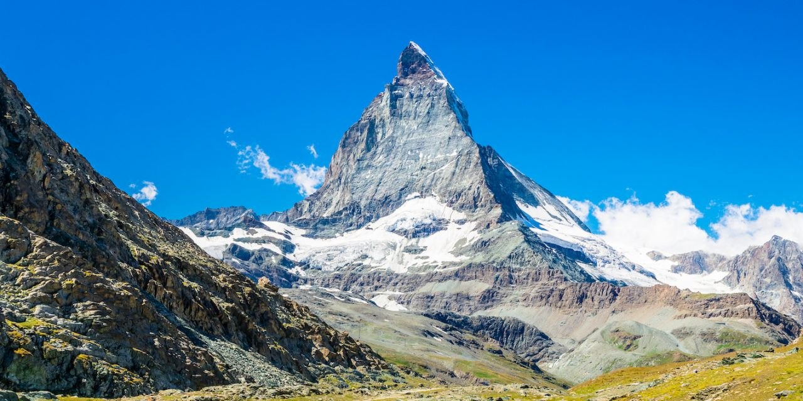
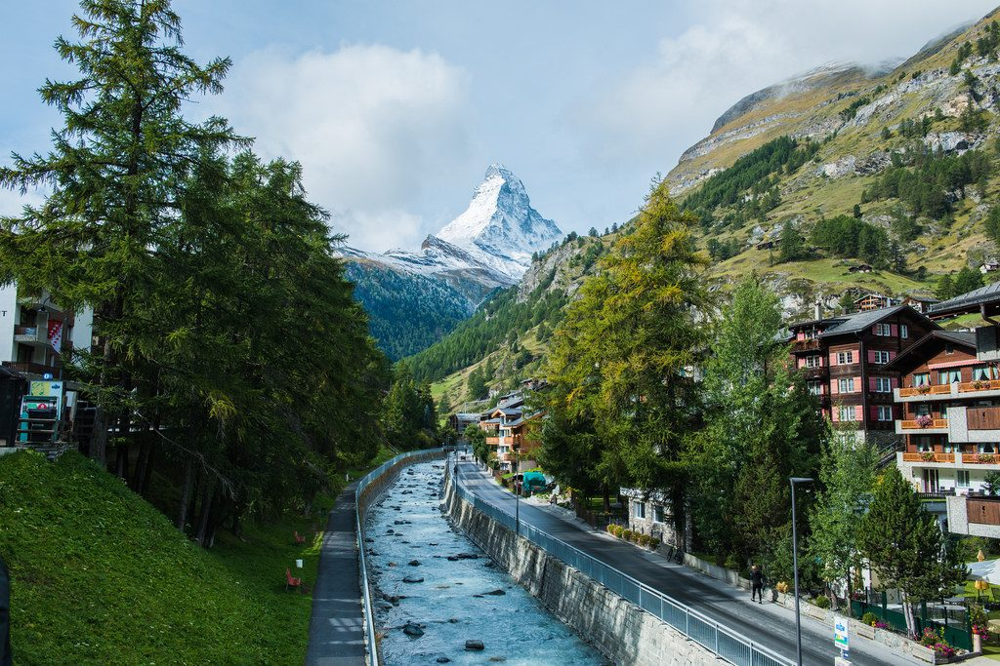
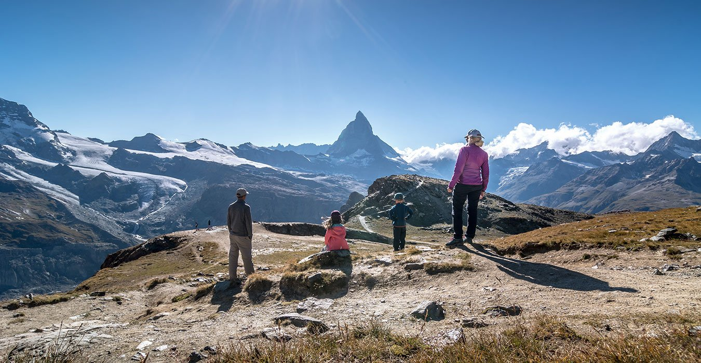
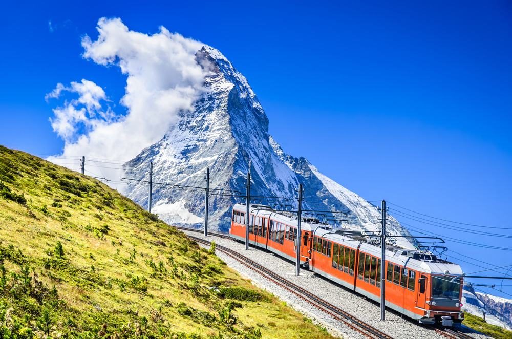
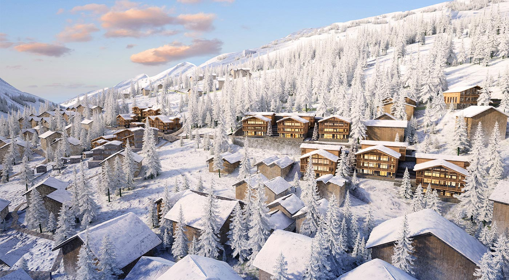
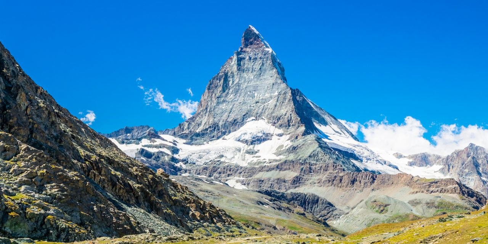
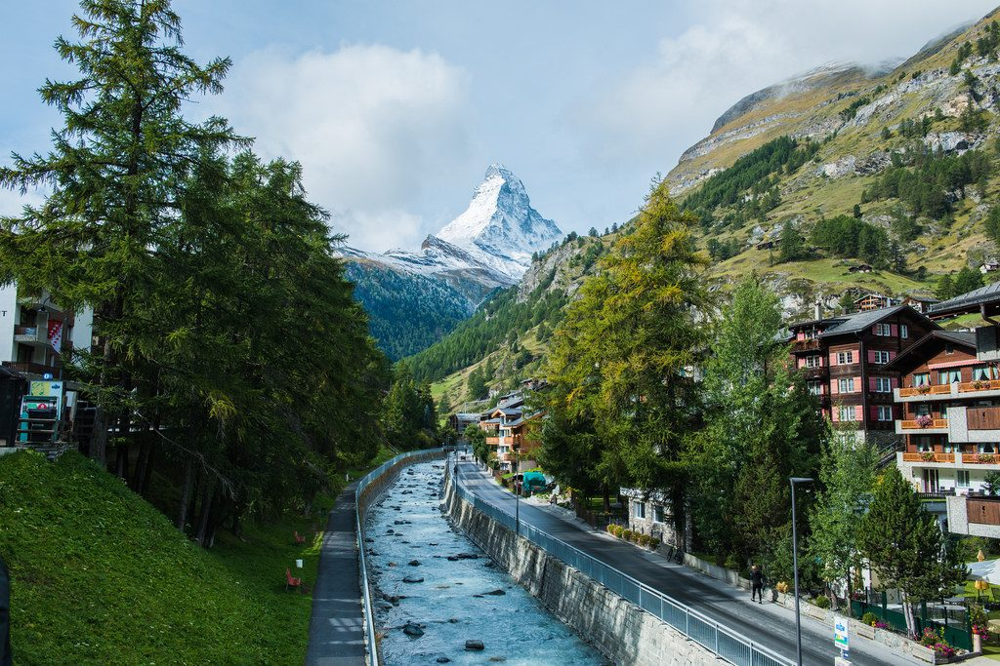
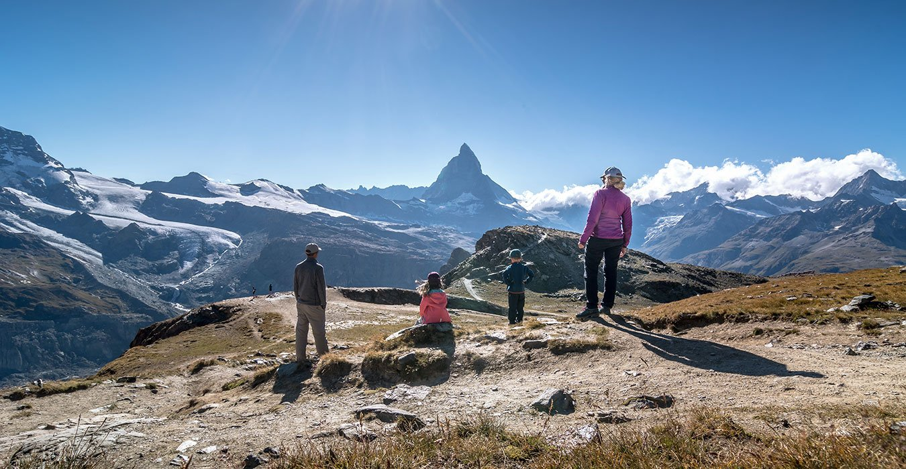
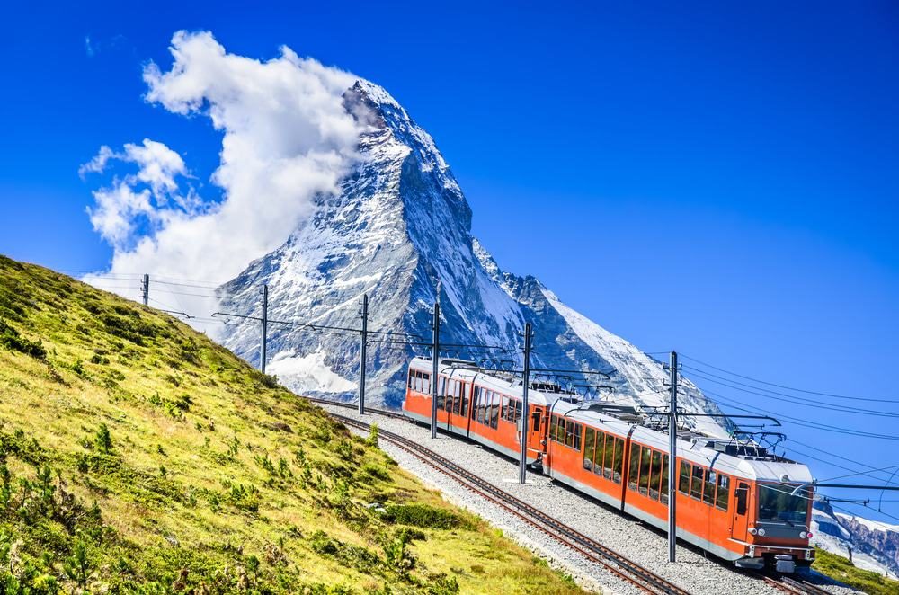
Zermatt Unveiled: Fascinating Facts You Didn't Know
- The Mighty Matterhorn: The Matterhorn, one of the most famous mountains in the world, overlooks Zermatt. This pyramid-shaped colossus is often called the “Mountain of Mountains” and is a highlight for climbers and photographers alike.
- A Car-Free Haven: To preserve its Alpine beauty and pure air, Zermatt is a car-free village. Electric vehicles and horse-drawn carriages are the main modes of transport here, adding to the town's unique charm.
- Home of Gourmet Delights: Zermatt is not just about scenic beauty; it's a haven for food lovers too. The village boasts of numerous high-end restaurants, including some Michelin-starred ones, offering culinary delights ranging from traditional Swiss cuisine to international dishes.
- The Gornergrat Railway: Experience one of the most scenic train rides in the world with the Gornergrat Railway. Since 1898, it has been taking passengers on a breathtaking journey to the Gornergrat summit, offering stunning views of the Matterhorn and surrounding peaks.
Discover the Splendor of Sicily: Italy's Island of Hidden Treasures
Step into the heart of the Mediterranean where Sicily, with its rich tapestry of history and culture, awaits to reveal its timeless wonders and hidden delights.
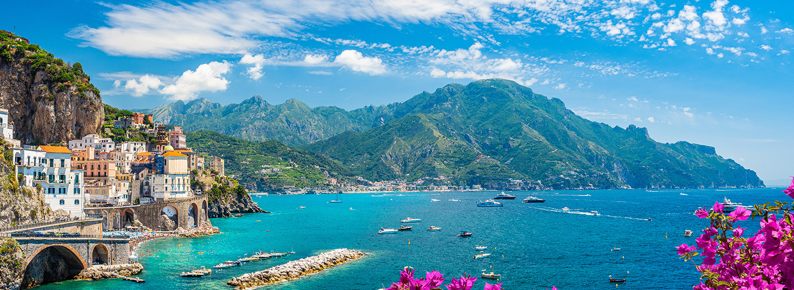Welcome to Sicily: A Mediterranean Gem
Embark on a captivating journey to Sicily, the largest island in the Mediterranean Sea, brimming with a rich tapestry of history, culture, and natural beauty. This sun-kissed island, located at the toe of Italy's boot, is a mosaic of stunning landscapes, from the sparkling azure waters of its rugged coastlines to the lush, rolling hills of its interior. Sicily is a treasure trove of ancient ruins and architectural marvels, bearing witness to a past ruled by Greeks, Romans, Arabs, and Normans. Each corner of the island offers a unique blend of flavors, with a culinary tradition as diverse as its history. From the bustling streets of Palermo to the majestic ruins of the Valley of the Temples, the serene beaches of Cefalù to the dramatic vistas of Mount Etna, Sicily promises a journey filled with wonder, discovery, and the warmth of Italian hospitality.
Sicily Uncovered: Intriguing Insights into the Island
- Land of Mythology: Sicily is steeped in mythology. It's famously known as the home of the Cyclops in Homer's Odyssey and the captivating dance of the Capricious Mount Etna in myths.
- The Wonders of Mount Etna: Mount Etna, Europe's highest and most active volcano, offers an extraordinary natural spectacle. Its fertile volcanic soils support unique vineyards, producing some of Sicily’s most distinguished wines.
- A Melting Pot of Cultures: Sicily’s history is marked by various dominations, including Greek, Roman, Byzantine, Arab, and Norman, each leaving an indelible mark on its culture, architecture, and cuisine.
- The Flavorful Sicilian Cuisine: Sicilian cuisine is a gastronomic delight, renowned for dishes like arancini (stuffed rice balls), caponata, and the iconic dessert, cannoli. It's a blend of flavors influenced by the island’s multicultural history.
- The Valley of the Temples: This UNESCO World Heritage site in Agrigento is one of the most important examples of Greek architecture and art in Italy, showcasing some of the best-preserved ancient Greek temples in the world.
Acadia National Park: A Symphony of Nature's Finest Creations
Immerse yourself in the enchanting beauty of Acadia National Park, where the wonders of the wilderness invite you to explore, dream, and discover.
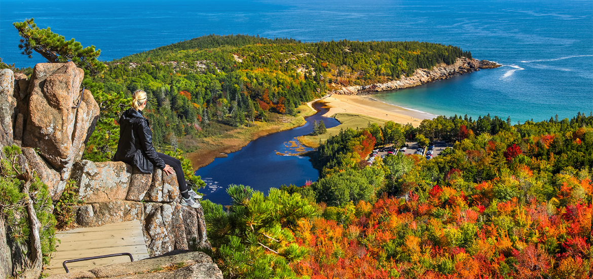Exploring Acadia: A Wilderness Retreat on the Coast of Maine
Acadia National Park, nestled on the rugged coast of Maine, is a captivating realm where land and sea converge to create a natural masterpiece. This exquisite park, covering much of Mount Desert Island and other smaller islands, is renowned for its stunning landscapes, ranging from rocky beaches to dense forests, and from serene lakes to towering mountains. Acadia offers an array of outdoor adventures, including hiking along its over 120 miles of historic trails, biking on the 45 miles of carriage roads, or simply marveling at the breathtaking views from Cadillac Mountain, the highest point on the U.S. East Coast. Wildlife enthusiasts will be thrilled with the diverse habitats that are home to an array of fauna, while the park's unique blend of natural and cultural history provides a rich tapestry for exploration. Whether you seek the tranquility of a seaside sunrise or the thrill of a rugged hike, Acadia National Park promises an unforgettable experience in every season.

Acadia's Hidden Gems: Fascinating Facts About the Park
- Cadillac Mountain Sunrises: Cadillac Mountain is one of the first places in the United States to see the sunrise. Visitors often gather here early in the morning for a spectacular start to their day.
- Carriage Roads and Stone Bridges: The park features 45 miles of rustic carriage roads, gifted by John D. Rockefeller Jr., with 16 beautifully crafted stone bridges, each with unique architectural designs.
- Diverse Ecosystem: Acadia is home to over 1,500 plant species and a variety of wildlife, including black bears, moose, and over 300 bird species, making it a biodiversity hotspot.
- Historic Jordan Pond House: Known for its delicious popovers, the Jordan Pond House dates back to the 1890s and offers stunning views of the Bubbles, two distinctive mountains near Jordan Pond.
- A Park with Many Names: Before becoming Acadia National Park in 1929, it was first designated as Sieur de Monts National Monument in 1916 and then renamed Lafayette National Park in 1919.
- Astounding Geology: The park showcases a rich geological history, with some of the oldest rocks on the Eastern Seaboard, dating back over 500 million years.